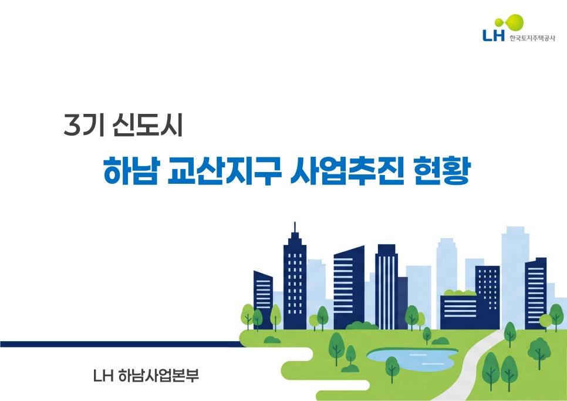
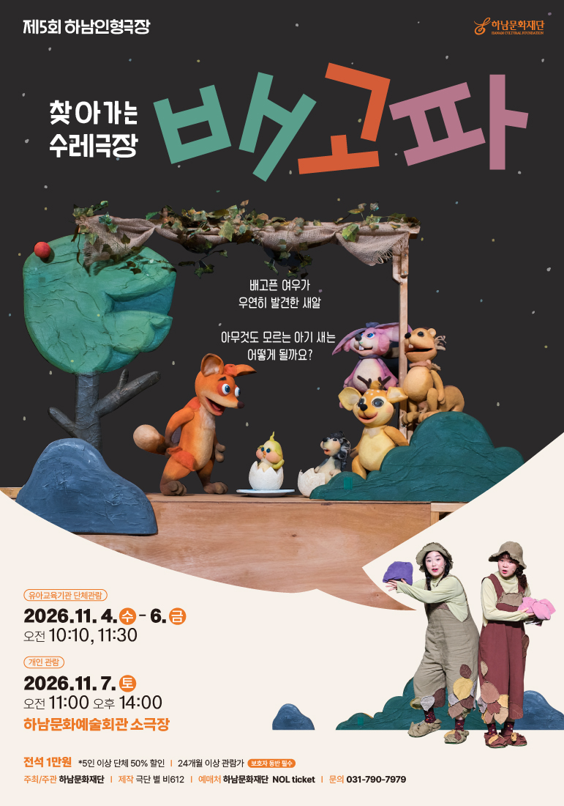
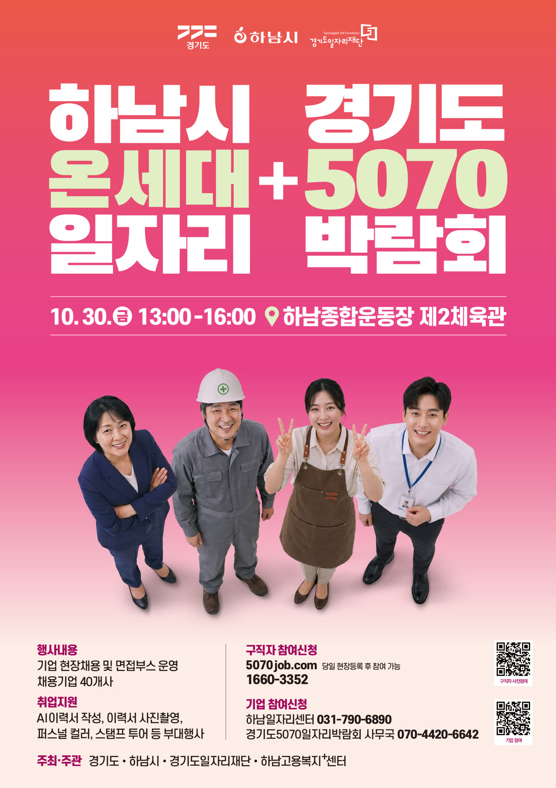

60호 | 2026년 10월 19일 발행
📌 이번 호 주요 목차
 우리동네 국회의원 이광재
우리동네 국회의원 이광재
📝 현장일지
이광재의원 "위례의 불편, 정책으로 풀어야" 북위례 위례숲 우미린 주민과 2시간 간담회
• 학교 과밀·어린이집 대기·서울행 버스·위례신사선·오소리 출몰 등 주민 현안 2시간 청취
• 송파·성남·하남으로 나뉜 위례 — 파리·런던처럼 나라가 광역교통 맡는 기구 필요
• 학교 문제는 학부모 참여 TF로, 서울시교육감 면담에 학부모 대표 동행
• 위례신사선 올해 국가예산 반영, 감일 연장 연내 결론 목표
• 아이들 체육 공간 부지 물색, 오소리는 경찰과 대책 협의, 응급실 문제 점검
• 12월 예산 국회 끝나면 다시 찾아 결과 보고
• 송파·성남·하남으로 나뉜 위례 — 파리·런던처럼 나라가 광역교통 맡는 기구 필요
• 학교 문제는 학부모 참여 TF로, 서울시교육감 면담에 학부모 대표 동행
• 위례신사선 올해 국가예산 반영, 감일 연장 연내 결론 목표
• 아이들 체육 공간 부지 물색, 오소리는 경찰과 대책 협의, 응급실 문제 점검
• 12월 예산 국회 끝나면 다시 찾아 결과 보고
📌 출처: 이광재 공식 네이버 블로그
📝 현장일지
이광재의원 "교산을 하남 발전의 교두보로" LH 교산지구 사업추진 현황 자료 전면 공개
• 10월 1일 주민설명회에서 LH가 발표한 '하남 교산지구 사업추진 현황' 자료 전체 공개
• 사업면적 절반 넘게 문화재 조사, 송전철탑 38기, 이전 기업 1,230곳(남양주 왕숙의 4배 이상)
• 2028년 분양·2030년 말 첫 입주인데 송파하남선은 2032년 개통 — '선 교통, 후 입주'와 거꾸로
• 예결위원장으로 송파하남선 예산 앞당기고, 개통 전 버스 대책 구체안 받아낼 것
• 원주민·자녀 청약 몫 확대, 집값 20%로 시작하는 '지분형 주택' 교산 시범 추진
• 사업면적 절반 넘게 문화재 조사, 송전철탑 38기, 이전 기업 1,230곳(남양주 왕숙의 4배 이상)
• 2028년 분양·2030년 말 첫 입주인데 송파하남선은 2032년 개통 — '선 교통, 후 입주'와 거꾸로
• 예결위원장으로 송파하남선 예산 앞당기고, 개통 전 버스 대책 구체안 받아낼 것
• 원주민·자녀 청약 몫 확대, 집값 20%로 시작하는 '지분형 주택' 교산 시범 추진

📌 출처: 이광재 공식 네이버 블로그
📰 언론보도
[공정언론뉴스] 이광재의원, 위례 과밀학급 '송파 공동학구' 협의… 출퇴근 수요응답형 버스 추진
이광재 의원이 15일 위례숲 우미린 아파트 주민 간담회에서 최승태 하남시의원 등과 함께 과밀학급과 출퇴근 교통난 해법을 논의했습니다. 학부모들이 학교 신설까지 3~4년이 걸린다며 송파구 학교의 한시적 공동 이용을 요청하자, 이 의원은 하남교육지원청 준비 관계자와 학교·학부모가 참여하는 TF 구성을 제안했습니다. 또 출퇴근 시간 가까운 전철역까지 빠르게 오가는 수요응답형 버스를 추진하겠다며, 연말 예산 심의 뒤 다시 찾아 진행 상황을 설명하겠다고 약속했습니다.
📌 출처: 공정언론뉴스 (동부권취재본부)
📰 언론보도
[국제뉴스] 이광재의원 "행정구역 벽이 주민 불편 초래… 광역교통 개편 필요"
이광재 의원이 북위례 위례숲 우미린 아파트에서 약 두 시간 동안 주민들을 만나 학교 과밀, 서울 방면 버스 노선, 위례신사선, 오소리 출몰 등 생활 현안을 들었습니다. 이 의원은 송파·성남·하남으로 나뉜 행정구역 탓에 문제가 더 복잡해졌다며 국가 차원의 광역교통 기구 신설이 필요하다고 강조했습니다. 학부모 참여 TF 구성과 유휴 부지 체육시설 설치를 추진하고, 위례신사선 국가예산 반영과 감일 연장 연내 결론에 힘쓰겠다고 밝혔습니다.
📌 출처: 국제뉴스 (이지영 기자)
📰 하남 지역 주요 뉴스
🎪 문화/행사
하남시·하남문화재단, 10월 18일 '하나반 치유 페스티벌' 강풍·우천으로 연기… 새 일정 추후 안내
하남시와 하남문화재단이 10월 18일 열 예정이던 '하나반 치유 페스티벌'을 강풍과 비 등 기상 악화로 연기했습니다. 행사장을 찾는 시민들의 안전을 최우선으로 고려한 결정입니다. 관계자는 행사를 기다려 온 시민들에게 아쉬운 소식을 전하게 돼 양해를 구한다며, 안전사고 예방과 쾌적한 관람 환경을 위한 조치라고 설명했습니다. 변경된 일정은 하남시와 하남문화재단 홈페이지, SNS를 통해 안내할 예정입니다. 시와 재단은 앞으로도 시민들이 안심하고 참여할 수 있도록 축제와 행사를 안전 중심으로 운영할 계획입니다.
📌 출처: 국제뉴스 (강정훈 기자)
🏠 주거/청년
하남시, 청년특화주택 수요조사… 19~39세 청년 대상 10월 27일까지 네이버폼 설문
하남시가 청년들이 원하는 주거 형태와 생활환경을 파악하기 위해 청년특화주택 수요조사를 진행합니다. 민선 9기 공약인 '청년특화주택 건설 협의 추진'과 연계해 국토교통부 수요자 맞춤형 특화주택 공모사업 참여를 검토하기 위한 것입니다. 하남시에 사는 19~39세 청년이면 10월 27일까지 네이버폼으로 참여할 수 있습니다. 현재 주거 불편사항과 선호 면적, 피트니스센터·카페·코인세탁실·독서실 등 필요한 편의시설을 묻습니다. 시는 결과를 관련 부서와 공유해 청년주택 사업과 주거정책 수립에 활용할 계획입니다.
📌 출처: 글로벌에픽 (이정훈 CP)
💬 하남 맘카페 HOT 이슈
이번 주 하남 지역 맘카페(미사맘스클럽, 아이품애, 정다운 감일맘, 하남맘 등)에서 많이 오르내린 HOT 이슈 TOP 3입니다.
1️⃣ [교육] "드디어 하남교육청이 따로 생기네요"… 하남교육지원청 내년 9월 개청 소식에 학부모들 반색
현황: 지난 15일 하남종합복지타운에서 열린 경기도교육감 타운홀미팅 직후, 하남 맘카페들이 하남교육지원청 분리·신설 소식으로 들썩였습니다. 미사맘스클럽에는 행사 일주일 전부터 하남 교육 현안과 신설 고교 개교 문제를 직접 건의할 기회라며 참석을 권하는 글이 올라왔고, 당일에는 교육감이 내년 9월 개청을 약속했다며 반기는 글이 이어졌습니다. 하남미사교산4050 카페에는 예상보다 일정이 앞당겨졌다는 참석 후기와 관련 기사가 잇따라 공유됐고, 감일스윗시티·아이품애·경기동부맘스쿨에도 도내 통합교육지원청 가운데 하남이 처음으로 분리된다는 기사가 올라왔습니다. 그동안 광주와 묶여 있어 불편했던 점을 짚으며 학교 신설과 배정 업무가 더 빨라지길 기대한다는 목소리가 많았습니다.
💡 주민 포인트: 정식 개청 전까지는 지금처럼 광주하남교육지원청이 하남 지역 학교 업무를 맡으므로, 학교 배정·전학 등 민원은 기존 교육지원청 누리집에서 확인하세요. 2027학년도 하남시 초등학교 통학구역안도 11월 4일까지 광주하남교육지원청에서 의견을 받고 있습니다.
💬 주민 반응: 하남 교육행정이 드디어 독립한다며 반기는 분위기 속에, 과밀학급·학교 신설 문제 해결로 이어지길 바란다는 기대가 컸습니다.
📌 출처: 네이버 카페 (미사강변도시 미사맘스클럽, 하남미사교산4050, 감일스윗시티, 아이품애, 경기동부맘스쿨)
2️⃣ [건강] "독감주사 어디서 맞나요?"… 백신 소진·3가 접종에 병원 찾기 분주
현황: 본격적인 환절기에 들어서면서 독감 예방접종 병원을 묻는 글이 하남·위례 카페 곳곳에 올라왔습니다. 미사강변도시 미사맘스클럽에는 '저렴하게 맞을 수 있는 곳이 있느냐', '알아본 병원은 성인 유료 백신이 이미 소진됐다'는 글과 고등학생 자녀가 접종할 병원을 찾는 질문이 이어졌고, '요즘은 4가 말고 3가를 맞는다는데 맞느냐'는 문의도 나왔습니다. 위례에서 공부하기 카페에는 '항아리 상가 쪽 소아과 재고가 벌써 떨어졌다', '병원 세 곳에 전화했더니 모두 3가만 있다'는 후기와 함께, 중학생 자녀를 혼자 무료접종 보내려니 보호자 동의서와 등본을 요구해 난감했다는 글이 올라왔습니다. 정다운 감일맘·호감맘·하남맘 모여라 카페에서도 아이 접종 길에 부모 유료 접종 가격을 묻거나 접종 후 미열·통증 경험을 나누는 글이 이어졌고, 학교에서 독감 걸린 아이 이야기가 들린다며 주말 접종 병원을 찾는 글도 있었습니다.
💡 주민 포인트: 생후 6개월~13세 어린이, 임신부, 65세 이상은 국가 무료접종 대상이며, 가까운 지정 의료기관은 질병관리청 예방접종도우미 누리집(nip.kdca.go.kr)에서 찾을 수 있습니다. 병원마다 백신 재고가 수시로 바뀌니 방문 전 전화 확인은 필수입니다. 경기도 중3~고3 학생은 경기도교육청 독감 접종비 지원(11월 21일까지, 보호자 동반 또는 동의서 지참)도 받을 수 있습니다.
💬 주민 반응: "올해는 미루지 말자"며 서두르는 분위기 속에, 백신 종류와 재고가 있는 병원 정보를 서로 나누는 글이 활발합니다.
📌 출처: 네이버 카페 (미사강변도시 미사맘스클럽, 위례에서 공부하기, 정다운 감일맘, 호감맘, 하남맘 모여라, 아이품애)
3️⃣ [교육] "유치원 설명회 다녀왔어요"… 2027학년도 입학 시즌 개막, 지망 순서 고민
현황: 2027학년도 유치원 입학을 앞두고 입학설명회 시즌이 시작되면서 유치원 선택 고민 글이 크게 늘었습니다. 미사강변도시 미사맘스클럽에는 지역 유치원 설명회 일정을 공유하는 글과 '23년생 유치원 어디로 보내야 하나', '설명회를 들어 보니 우리 아이는 4순위라 걱정'이라는 글이 연이어 올라왔고, 1·2지망을 어떻게 써야 하는지 묻는 질문과 유치원 선택 기준을 정리한 글도 공유됐습니다. 미사강변 리슈빌 입주자 모임에는 망월초 병설유치원에 아이를 보내는 학부모의 후기가 올라왔고, 정다운 감일맘·클럽감일맘에는 감일초 병설유치원 교육과정 설명회 등 감일동 유치원 설명회 소식이 이어졌습니다. 위례에서는 슬기로운 위례생활 카페가 위례 내 국공립·사립 유치원의 입학설명회와 시설공개의 날 일정을 모아 공유했고, 동네편지 카페에는 학급당 인원·운영 시간·차량 운행 여부 등을 표로 정리해 비교하라는 팁이 올라왔습니다.
💡 주민 포인트: 유치원 입학 신청은 기존 '처음학교로' 기능이 합쳐진 유보통합포털(유치원입학 서비스)에서 온라인으로 진행되며, 선착순이 아닌 추첨 방식입니다. 우선모집 자격과 지원 순위는 유치원마다 모집요강이 다르고, 설명회도 사전 신청제인 곳이 많으니 경기도교육청과 지원하려는 유치원의 공지를 미리 확인하세요.
💬 주민 반응: "어린이집도 올해가 마지막이라 어디든 가야 한다"는 걱정 속에, 설명회 후기와 지망 전략을 나누는 글이 활발합니다.
📌 출처: 네이버 카페 (미사강변도시 미사맘스클럽, 미사강변 리슈빌 입주자 모임, 정다운 감일맘, 클럽감일맘, 슬기로운 위례생활, 동네편지 - 위례 신도시)
🎭 ALL IN 하남라이프
2026년 10월 19일 기준 한눈에 보는 하남시 최신 문화·행사·교육 안내 가이드
🎪 10.23(금)~10.30(금) | 미사·신장·위례 · 거리 버스킹
[버스킹] 「스테이지 하남」 10월 4~5주차 정규공연 (하남문화재단)
"포크뮤직부터 트로트까지, 동네 곳곳이 무대가 된다"
하남문화재단의 길거리 공연 사업 「스테이지 하남」이 하반기 막바지 무대를 이어갑니다. K-POP·스트릿댄스·치어리딩·하모니카·국악 퓨전·색소폰까지 다양한 팀이 미사·신장·위례를 찾아갑니다.
🗓 일정: 10.23(금) 18:30~19:30 미사역 시계탑 / 10.24(토) 16:30~18:00 신장전통시장·스타필드시티 위례, 17:00~18:30 미사호수공원 계단광장 / 10.30(금) 18:30~19:30 미사역 시계탑
📍 장소: 미사역 시계탑, 미사호수공원 계단광장, 신장전통시장, 스타필드시티 위례
👥 대상: 하남시민 누구나 (야외 거리공연)
✅ 신청: 별도 신청 없이 현장 관람
☎️ 문의: 031-790-7918
하남문화재단의 길거리 공연 사업 「스테이지 하남」이 하반기 막바지 무대를 이어갑니다. K-POP·스트릿댄스·치어리딩·하모니카·국악 퓨전·색소폰까지 다양한 팀이 미사·신장·위례를 찾아갑니다.
🗓 일정: 10.23(금) 18:30~19:30 미사역 시계탑 / 10.24(토) 16:30~18:00 신장전통시장·스타필드시티 위례, 17:00~18:30 미사호수공원 계단광장 / 10.30(금) 18:30~19:30 미사역 시계탑
📍 장소: 미사역 시계탑, 미사호수공원 계단광장, 신장전통시장, 스타필드시티 위례
👥 대상: 하남시민 누구나 (야외 거리공연)
✅ 신청: 별도 신청 없이 현장 관람
☎️ 문의: 031-790-7918
📌 출처: 하남문화재단 (축제·행사게시판)
🎪 11.7(토) 11:00·14:00 | 하남문화예술회관 소극장 · 전석 1만원
[가족 인형극] 제5회 하남인형극장 <배고파> (하남문화재단)
"배고픈 여우와 아기 새, 감동과 웃음의 인형극"
찾아가는 수레극장의 <배고파>는 배고픈 여우가 새알에서 깨어날 아기 새를 잡아먹으려 품다가 결국 사랑하게 되는 이야기입니다. 아이와 함께 보기 좋은 45분 공연입니다.
🗓 일정: 2026.11.7(토) 오전 11시 / 오후 2시 (45분, 인터미션 없음)
📍 장소: 하남문화예술회관 소극장(아랑홀)
👥 대상: 24개월 이상 관람가 (24개월 미만 입장 불가, 무릎 관람 불가)
✅ 신청: NOL 티켓 예매 (전석 1만원, 전석 지정좌석제)
☎️ 문의: 031-790-7979
찾아가는 수레극장의 <배고파>는 배고픈 여우가 새알에서 깨어날 아기 새를 잡아먹으려 품다가 결국 사랑하게 되는 이야기입니다. 아이와 함께 보기 좋은 45분 공연입니다.
🗓 일정: 2026.11.7(토) 오전 11시 / 오후 2시 (45분, 인터미션 없음)
📍 장소: 하남문화예술회관 소극장(아랑홀)
👥 대상: 24개월 이상 관람가 (24개월 미만 입장 불가, 무릎 관람 불가)
✅ 신청: NOL 티켓 예매 (전석 1만원, 전석 지정좌석제)
☎️ 문의: 031-790-7979

📌 출처: 하남문화재단 하남문화예술회관
🏛️ 공공기관 소식지
2026년 10월 19일 기준 하남시 공공기관 주요 공고·신청 안내입니다.
🏛️ 하남시 | 10.30(금) 13:00 · 일자리박람회 현장면접
하남시 온세대 + 경기도 5070 일자리박람회 — 기업 현장면접·취창업 상담
"이력서 들고 미사로, 하루에 여러 기업 면접"
경기도·하남시·경기도일자리재단·하남고용복지+센터가 함께 여는 일자리박람회입니다. 기업 현장면접과 취·창업 지원, 퍼스널컬러 진단·면접 메이크업·AI 이력서 작성 및 사진 촬영 부대행사가 열립니다.
📝 접수: 행사 당일 현장등록 또는 온라인 접수(5070job.com/Hanam)
👥 대상: 구직을 희망하는 시민
🗓 일시·장소: 2026.10.30(금) 13:00~16:00, 하남종합운동장 제2체육관(아리수로 600, 미사역 도보 10분)
✅ 방법: 지원 희망 기업 수만큼 이력서 지참 (고용24 구직등록·당일 구직신청서 작성 시 박람회 후에도 취업지원 서비스 제공)
☎️ 문의: 031-790-6890 (하남일자리센터)
경기도·하남시·경기도일자리재단·하남고용복지+센터가 함께 여는 일자리박람회입니다. 기업 현장면접과 취·창업 지원, 퍼스널컬러 진단·면접 메이크업·AI 이력서 작성 및 사진 촬영 부대행사가 열립니다.
📝 접수: 행사 당일 현장등록 또는 온라인 접수(5070job.com/Hanam)
👥 대상: 구직을 희망하는 시민
🗓 일시·장소: 2026.10.30(금) 13:00~16:00, 하남종합운동장 제2체육관(아리수로 600, 미사역 도보 10분)
✅ 방법: 지원 희망 기업 수만큼 이력서 지참 (고용24 구직등록·당일 구직신청서 작성 시 박람회 후에도 취업지원 서비스 제공)
☎️ 문의: 031-790-6890 (하남일자리센터)

📌 출처: 하남시청 (지역경제과)
🏥 하남시보건소 | ~10.25(일) · 감일권 성인 32명 추첨
감일건강생활지원센터 ‘건강 한끼 요리 교실’ — 참여자 모집
"건강한 한 끼, 동네 보건센터에서 함께 만들어요"
감일건강생활지원센터가 감일·감북·위례 권역 성인을 대상으로 ‘건강 한끼 요리 교실’ 참여자를 모집합니다. 닭다리살·새우·차돌박이·훈제오리 등 고단백 토핑과 신선한 채소로 건강한 포케를 만드는 4회 수업(회당 8명)이며, 모집 종료 후 일괄 추첨합니다.
📝 접수: 2026.10.12(월) 09:00 ~ 10.25(일) 23:30
👥 대상: 감일권역 성인(감일, 감북, 위례) 32명 (회당 8명)
🗓 운영: 10.28(수) 10:00~11:30, 14:00~15:30 / 10.29(목) 14:00~15:30 / 10.30(금) 14:00~15:30 · 감일건강생활지원센터(감일순환로 181, 감일공공복합청사 2층)
✅ 방법: QR코드 또는 링크(naver.me/F057CCEH) 신청서 접수 · 10.26(월) 선정자에 한해 개별 문자 안내
☎️ 문의: 031-5182-1609 (감일건강생활지원센터)
감일건강생활지원센터가 감일·감북·위례 권역 성인을 대상으로 ‘건강 한끼 요리 교실’ 참여자를 모집합니다. 닭다리살·새우·차돌박이·훈제오리 등 고단백 토핑과 신선한 채소로 건강한 포케를 만드는 4회 수업(회당 8명)이며, 모집 종료 후 일괄 추첨합니다.
📝 접수: 2026.10.12(월) 09:00 ~ 10.25(일) 23:30
👥 대상: 감일권역 성인(감일, 감북, 위례) 32명 (회당 8명)
🗓 운영: 10.28(수) 10:00~11:30, 14:00~15:30 / 10.29(목) 14:00~15:30 / 10.30(금) 14:00~15:30 · 감일건강생활지원센터(감일순환로 181, 감일공공복합청사 2층)
✅ 방법: QR코드 또는 링크(naver.me/F057CCEH) 신청서 접수 · 10.26(월) 선정자에 한해 개별 문자 안내
☎️ 문의: 031-5182-1609 (감일건강생활지원센터)
📌 출처: 하남시보건소 (건강증진과)
🏫 경기도교육청 | ~11.21(토) · 중3~고3 독감접종비 3만원
2026 경기도교육청 중·고등학생 독감 예방접종 지원 — 지정 의료기관 접종
"수험생·중고생 독감 백신, 접종비 걱정 덜어요"
경기도교육청이 중·고등학생 인플루엔자 3가 백신 접종비를 1인당 3만원 지원합니다(접종 의료기관으로 지급). 학생이 지정 의료기관을 직접 방문해 접종받으면 됩니다.
📝 기간: 2026.10.5(월) ~ 11.21(토) 기간 내 접종 건만 지원
👥 대상: 경기도 소재 학교 중3~고3 재학생 및 경기도 중·고등학생 중 2008.1.1.~2011.12.31. 출생자
🗓 의료기관: 참여기관 명단은 공고 첨부파일 참조 (방문 전 의료기관에 접종 가능 여부 전화 확인 필수)
✅ 방법: 보호자 동반 또는 보호자 동의서 지참 후 학생이 지정 의료기관 개별 방문
☎️ 문의: 031-280-7155 (광주하남교육지원청)
경기도교육청이 중·고등학생 인플루엔자 3가 백신 접종비를 1인당 3만원 지원합니다(접종 의료기관으로 지급). 학생이 지정 의료기관을 직접 방문해 접종받으면 됩니다.
📝 기간: 2026.10.5(월) ~ 11.21(토) 기간 내 접종 건만 지원
👥 대상: 경기도 소재 학교 중3~고3 재학생 및 경기도 중·고등학생 중 2008.1.1.~2011.12.31. 출생자
🗓 의료기관: 참여기관 명단은 공고 첨부파일 참조 (방문 전 의료기관에 접종 가능 여부 전화 확인 필수)
✅ 방법: 보호자 동반 또는 보호자 동의서 지참 후 학생이 지정 의료기관 개별 방문
☎️ 문의: 031-280-7155 (광주하남교육지원청)
📌 출처: 하남시보건소 (보건정책과) · 광주하남교육지원청
© 2026 우리동네 진짜일꾼 이광재